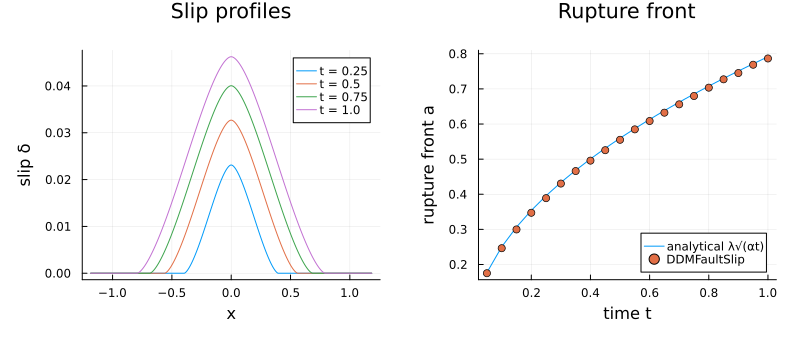
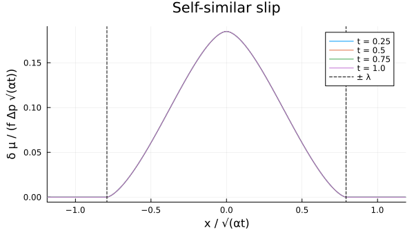

Tutorial: fluid-induced aseismic slip
This tutorial simulates the aseismic slip of a 2D fault with constant friction, caused by a fluid injected at constant pressure, and compares the results with the analytical solution of Bhattacharya & Viesca (2019) and Viesca (2021).
Problem description
A planar fault is embedded in an infinite elastic medium of shear modulus $μ$. It is initially loaded by a uniform normal stress $σ_0$ and a uniform shear stress $τ_0$ below its frictional strength $f σ_0$. At time $t = 0$, fluid is injected at $x = 0$ with a constant pressure increase $Δp$. The pore pressure diffuses along the fault with diffusivity $α$:
\[p(x, t) = Δp \, \mathrm{erfc}\left(\frac{|x|}{\sqrt{α t}}\right).\]
The pressure reduces the frictional strength $f (σ_0 - p)$ until it reaches the shear stress, and the fault starts to slip. The slipping region grows self-similarly: its half-length is $a(t) = λ \sqrt{α t}$, where the amplification factor $λ$ depends only on the stress-injection parameter
\[T = \frac{f σ_0 - τ_0}{f Δp},\]
through the relation
\[T = \frac{1}{π} \int_{-1}^{1} \frac{\mathrm{erfc}(λ |s|)}{\sqrt{1 - s^2}} \, \mathrm{d}s.\]
Critically stressed faults ($T \ll 1$) have $λ \gg 1$: slip outpaces the diffusion of the pore pressure.
Analytical solution
We first compute the amplification factor $λ$ for $T = 0.5$. With the change of variable $s = \sin θ$, the integral has a smooth integrand and is evaluated with the trapezoidal rule. $T(λ)$ decreases with $λ$, so $λ$ is found by bisection.
using SpecialFunctions
function stress_parameter(λ; n=2000)
θ = range(-π / 2, π / 2, length=n + 1)
w = fill(π / n, n + 1)
w[1] = w[end] = π / (2 * n)
return sum(w .* erfc.(λ .* abs.(sin.(θ)))) / π
end
function amplification_factor(T)
a, b = 1.0e-06, 1.0e+02
for _ in 1:100
c = (a + b) / 2
stress_parameter(c) > T ? (a = c) : (b = c)
end
return (a + b) / 2
end
T = 0.5
λ = amplification_factor(T)0.7916071733568899Simulation
We use dimensionless parameters and choose the initial shear stress that corresponds to $T = 0.5$:
μ = 1.0 # shear modulus
f = 0.5 # friction coefficient
h = 1.0e-05 # fault thickness (interface stiffness k = μ / h)
σ₀ = 1.0 # initial normal stress
Δp = 0.5 # injection pressure
α = 1.0 # hydraulic diffusivity
τ₀ = f * (σ₀ - T * Δp) # initial shear stressThe fault is discretized with 400 elements. Its length is chosen larger than the slipping region at the end of the simulation, $t = 1$:
using DDMFaultSlip
using StaticArrays
tₑ = 1.0
L = 1.5 * λ * sqrt(α * tₑ)
mesh = DDMesh1D(SVector(-L, 0.0), SVector(L, 0.0), 400)Mesh information:
Mesh dimension: 1
Nodes: 401
Elements: 400
We create the shear problem and set the initial stresses, the pore pressure and the frictional constraint:
problem = ShearDDProblem(mesh; μ=μ)
addNormalStressIC!(problem, X -> σ₀ * ones(length(X)))
addShearStressIC!(problem, X -> τ₀ * ones(length(X)))
pressure(X, t) = Δp * erfc.([abs(x[1]) for x in X] / sqrt(α * t))
addFluidCoupling!(problem, FunctionPressure(mesh, pressure))
addFrictionConstraint!(problem, ConstantFriction(f, μ / h))The simulation runs for 20 time steps of constant size. The element values are written to one CSV file per time step:
times = collect(range(0.0, tₑ, length=21))
time_stepper = TimeSequence(times)
output_dir = mktempdir()
outputs = [CSVDomainOutput(mesh, joinpath(output_dir, "fault"))]
run!(problem, time_stepper; outputs=outputs, log=false)Results
Each CSV file contains the columns x,y,sigma,delta,delta_dot,tau,p. The fault is slipping where the shear stress equals the frictional strength, $τ = f σ'$, which gives the position of the rupture front:
using DelimitedFiles
function read_step(k)
data = readdlm(joinpath(output_dir, "fault_$(k).csv"), ',', skipstart=1)
return (x=data[:, 1], σ=data[:, 3], δ=data[:, 4], τ=data[:, 6], p=data[:, 7])
end
function rupture_front(step)
sliding = isapprox.(step.τ, f .* step.σ; rtol=1.0e-03)
return any(sliding) ? maximum(abs.(step.x[sliding])) : 0.0
end
front = [rupture_front(read_step(k)) for k in 1:20]
front_exact = λ .* sqrt.(α .* times[2:end])
maximum(abs.(front .- front_exact))0.006926562766872646The rupture front matches the analytical solution to within about one element size, $2L / 400 ≈ 0.006$. The figure shows the slip profiles at different times (left) and the evolution of the rupture front (right):
using Plots
p1 = plot(xlabel="x", ylabel="slip δ", title="Slip profiles", legend=:topright)
for k in (5, 10, 15, 20)
step = read_step(k)
plot!(p1, step.x, step.δ, label="t = $(times[k + 1])")
end
p2 = plot(times[2:end], front_exact, label="analytical λ√(αt)",
xlabel="time t", ylabel="rupture front a", title="Rupture front", legend=:bottomright)
scatter!(p2, times[2:end], front, label="DDMFaultSlip")
plot(p1, p2, layout=(1, 2), size=(800, 350), margin=4Plots.mm)
The slip profiles are self-similar: with the scaling $x / \sqrt{α t}$, the rupture front stays at $λ$, and the slip normalized by $f Δp \sqrt{α t} / μ$ collapses on a single curve:
p3 = plot(xlabel="x / √(αt)", ylabel="δ μ / (f Δp √(αt))", title="Self-similar slip",
legend=:topright)
for k in (5, 10, 15, 20)
step = read_step(k)
ℓ = sqrt(α * times[k + 1])
plot!(p3, step.x ./ ℓ, step.δ .* μ ./ (f * Δp * ℓ), label="t = $(times[k + 1])")
end
vline!(p3, [-λ, λ], color=:black, linestyle=:dash, label="± λ")
plot(p3, size=(600, 350), xlims=(-1.5λ, 1.5λ))
Going further
- Smaller values of $T$ (critically stressed faults) lead to faster ruptures; the domain length must then be increased accordingly.
- The same problem on a circular 3D fault can be simulated with a
DDMesh2Dgenerated with Gmsh, a pressure $p(r, t) = Δp_* E_1(r^2 / (α t))$ for injection at constant rate, andVTKDomainOutputoutputs to visualize the results in ParaView. SlipWeakeningFrictionmodels faults whose friction decreases with slip, which can lead to the nucleation of dynamic ruptures.